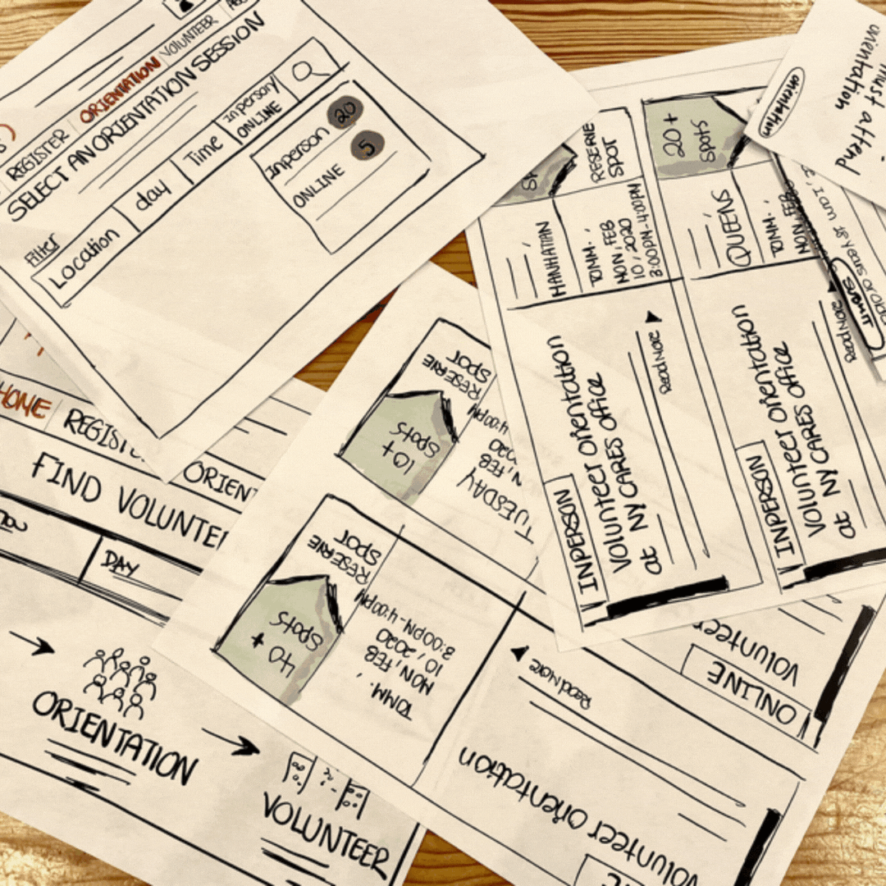

This is the second part of the two-part major assignment for this unit, which connects your back-end passage mark-up, with a front-end user interface where you imagine a digital edition that makes use of the machine readability of your passage.
When you have completed your passage mark-up, you will create a paper prototype of a digital edition / user interface design that takes creative advantage of things your mark-up has enabled, by making the text machine readable. In other words, now you get to imagine things that you COULD do as a fully rendered digital edition, because the computer understands your text as more than just strings of characters. We've discussed many ideas in class, but to get your creativity going think about:
Once you have decided the kinds of things you want to enable, you have the second task of sketching a user interface design -- on hardware of your choice -- that shows what the user would do to effect these things. To take some examples from class:
Again -- these are just a couple of ideas to get you started.
You have a lot of creative freedom for this paper prototype, but you must adhere to the following:
When you have completed your prototype, create a user-flow video, where you film the screens in order, showing how each interaction would following from the next (use the video examples from Week 10: Oct 25-31 as guides). You have the option to include commentary via on-screen text or audio if you want -- you may find this helpful to explain your vision -- but this is not required.
Your video is due, submitted via Moodle, by 11:59 pm, SUNDAY Nov 8